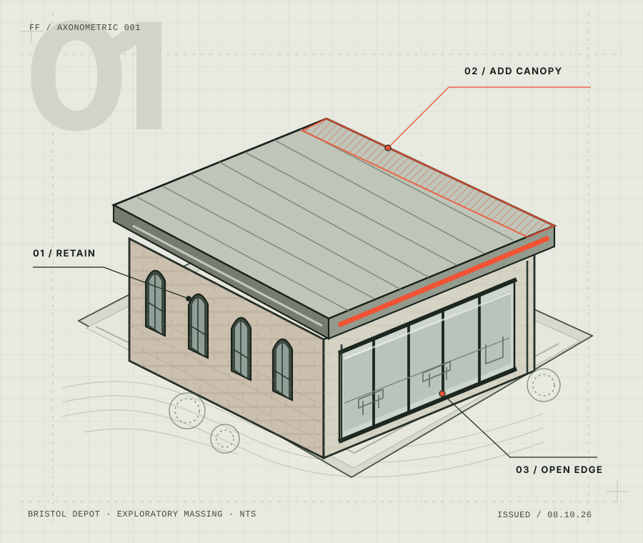

LISTEN FIRST.
Understand the neighbourhood, its people and the life already unfolding around a place.
Buildings hold stories, resources and possibilities. We explore how thoughtful intervention can make them useful again, without losing what makes them worth keeping.
Understand the neighbourhood, its people and the life already unfolding around a place.
See existing structure and materials as valuable starting conditions rather than obstacles.
Make additions legible, considered and carefully related to what came before.
Plan spaces that can welcome different people, activities and futures.
This website is an independent speculative studio concept, a study in editorial identity and the storytelling of adaptive reuse. Every project illustration is original concept artwork, not a claim of constructed work.
EXPLORE THE WORK ↗